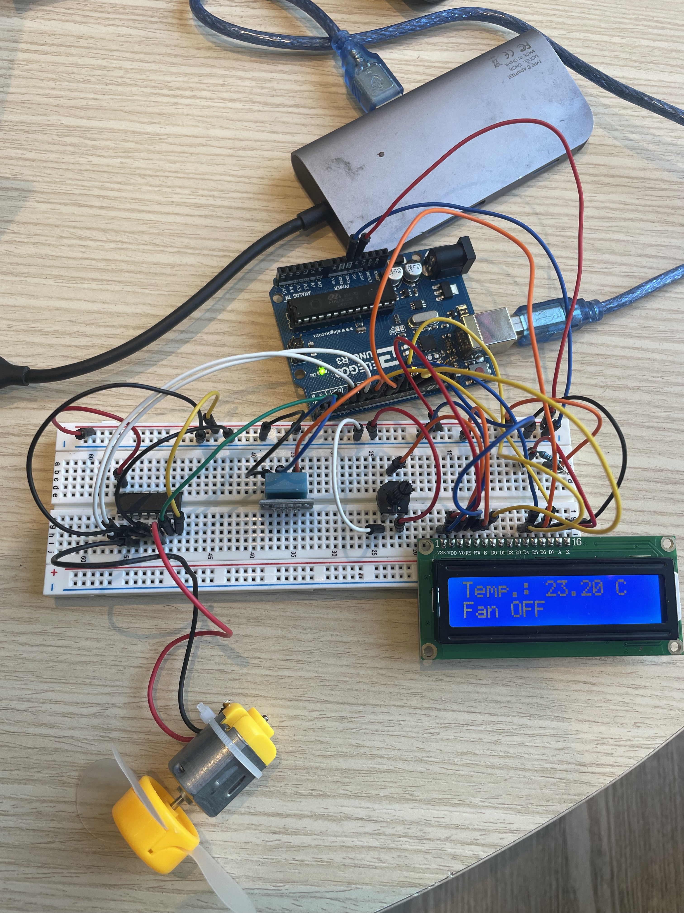

Coming from living in 2 countries with sub-tropical climates, I wanted to build a temperature controlled fan that would switch off once the temperature in the room went below a certain point. To achieve this, I utilized the following supplies: 1)Temperature and Humidity Sensor 2)LCD Board 3)Jumper wires 4)Arduino Board 5)Rotary Potentiometer (10K) 6)Breadboard 7)limiting resistors (220 ohms) 8)DC motor with fan

This is the schematic of my final project. My bigest challenge was getting my LCD display to work. Since I did not have an I2C module, I had to make make 12 connections with the breadboard and arduino uno. However, my connections did not work for a long time. I carefully read the LCD documentation, and spent a lot of hours on these commmunities to realize that the A and K are the backlight pins of the LCD that enable the display. The K is the cathode that connects to 5V power supply but with a limiting resistir of 220 ohms and A is the anode that connects to the ground. The D0 to D3 pins require no connection as we are already getting the data that we need to display. For safety, we cound pin it to ground, but it is not required. The RS pin allows us to write to the LCD, where as the E pin allows us to control it. The RW pin is used to fetch content from the LCD but it is not required in our case, hence we ground it! The potentiometer is used to contrast the LCD with a 10k resistor built into it and the other 2 ends connect to ground. The DHT is the temperature and humidity sensor I used. It has 3 pins. One is the data reading pin, one is power supply and the last one is the ground. For the DC motor that has the fan, we require the L239D controller.The L293D is used with DC motors because it allows them to go forward and backward. It protects the motors from damage by handling the energy they produce when stopping. Also, it makes sure the motors get enough power, even if the control signals are weak. The L293D is easy to use with digital systems like microcontrollers, making it a popular choice for driving DC motors, despite having some limitations like power loss.
This is my actual circuit on the breadboard. LCD TO ARDUINO CONNECTIONS VSS -> GND VDD -> 5V V0 -> Middle pin of 10k potentiometer RS -> 12 RW -> GND E -> 11 D0: D3 (Nothing) D4-> 10 D5-> 9 D6-> 8 D7-> 7 A (Cathode) -> 5V (Use a limiting resistor like 220 Ohms) K -> GND DHT TO ARDUINO Sensory pin to pin 6 Middle pin to 5v Negative pin to GND L293D and DC Motor with Fan pin 1 -> pin 5 pin 2 -> pin 4 pin 3 -> in1 of DC motor pin 4 -> GND pin 5 -> GND pin 6 -> in2 pin 7 -> pin 3] pin 8 -> 5v pin 16 -> 5v POTENTIOMETER with LCD Middle pin to V0 Both other pins to ground As per the documentation, I found that one of the two pins must go to 5v and other to ground, however after reading extended posts on many arduino communities, most of the users there suggested connecting both to ground as it saved some overall current and the LCD display worked better! I used there suggestion as a troubleshooter and to my surprise it worked for my LCD.
Here is my firmware for the project. This was a relatively intuitive part of the project for me.
#include
#include
#define DHTPIN 6 // DHT11 sensor data pin
#define DHTTYPE DHT11 // DHT sensor type
DHT dht(DHTPIN, DHTTYPE);// Declaring DHT connection and type
const int rs = 12, e = 11, d4 = 10, d5 = 9, d6 = 8, d7 = 7;
LiquidCrystal lcd(rs,e, d4, d5, d6, d7); // declaring the LCD and its pins
int Motor_Pin1 = 4; // in1 pin
int Motor_Pin2 = 3; // In2 pin
int Enable = 5; // pin 1 on L293D
void setup() {
delay(1000);
lcd.begin(16,2); // Initializes the 16x2 LCD
dht.begin() ; // Initializes DHT sensor
pinMode(Motor_Pin1, OUTPUT);
pinMode(Motor_Pin2, OUTPUT);
pinMode(Enable, OUTPUT);
}
void loop() {
float temp = dht.readTemperature();
lcd.clear();
lcd.setCursor(0,0); // Setting the position to display temperature
lcd.print("Temp.: ");
lcd.print(temp);
lcd.print(" C");
lcd.setCursor(0,1); // Setting the position to display fan speed
if(temp <= 25) {
analogWrite(Enable,0); // If the temeparture is below 25 C
lcd.print("Fan OFF "); // the fan is switched off and lcd displays the same
delay(100);
} else{
analogWrite(Enable, 255); // otherwise the fan is at a 100%
lcd.print("Fan Speed: 100%"); // same is displayed on the LCD
delay(100);
}
digitalWrite(Motor_Pin1, LOW); // To drive the motor in a particular direction
digitalWrite(Motor_Pin2, HIGH); // To drive the motor in a particular direction
delay(2000); // Adds a delay of 2 seconds so that the command can be registered
}
Here is the youtube video for the same.